RQ3: What are the proposed solutions for addressing architectural problems?
In this question, for the identified architectural problem, we analyze the solutions suggested by practitioners and provide specific examples.
Solutions to architectural problems
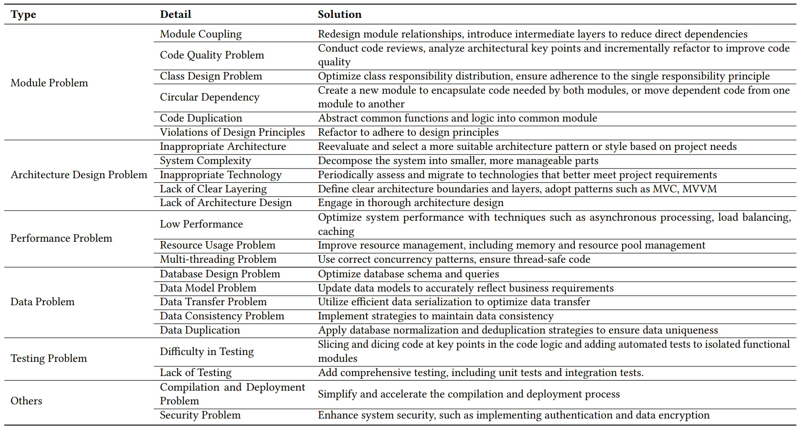
Module Coupling.
Example: Post #29348924 shows an application lacks an independent business layer. This causes tight coupling between business
logic and data access, with direct database calls among user interfaces. The solution to this problem: 1) Introduce a service Layer:
add a service layer to separate business logic from the data access
layer, then use this layer to handle all requests from different user
interfaces uniformly; 2) Gradually Migrate Logic: migrate the existing business logic from the data layer to the new layer. By creating
an intermediate layer, the business logic can be separated from the
data access layer, which reduces direct dependencies.
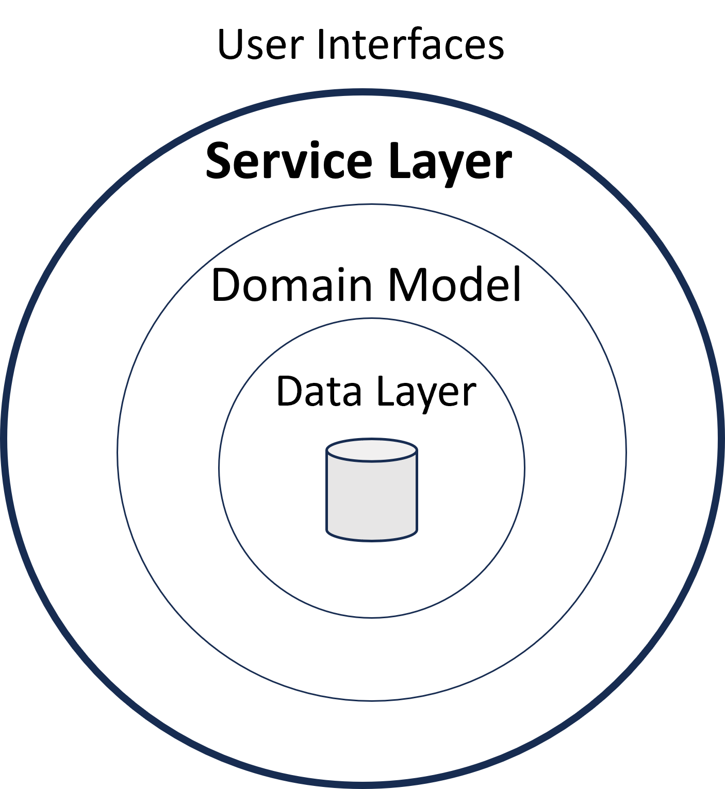
Code Quality Problem.
Example: Post #2981750 discussed how to refactor a large messy
codebase. The codebase has problems such as single classes taking
on multiple responsibilities with high coupling. The solution is: 1)
Drawing High-level Architectural Diagrams: depict the high-level
architecture of the program to help identify key points for refactoring; 2) Staged Refactoring: avoid performing massive refactoring
efforts all at once. Instead, focus refactoring on a single module at
a time, ensuring stability before proceeding to the next stage; 3)
Employing Unit Tests: After each small-scale refactoring, run unit
tests to ensure that the code's functionality remains intact.
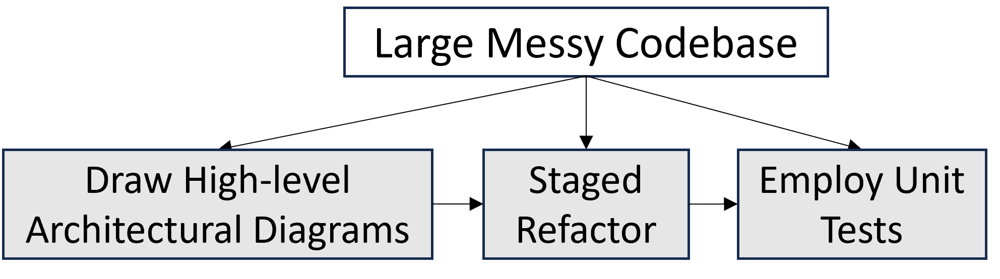
Class Design Problem.
Example: In post #30781444, the application's controller class
contains too many methods, making it bloated. This raises a demand
to refactor it to follow the Single Responsibility Principle. The
solution is as follows: 1) Analyzing the Controller Class: assess all
the action methods in the controller class to identify different sets of
functionalities; 2) Logical Grouping: group related action methods
together, where each group handles a specific type of functionality
or business logic; 3) Creating Independent Controllers: For each
logical group, a new controller class is created, dedicated to a set of
specific action methods and corresponding business logic.
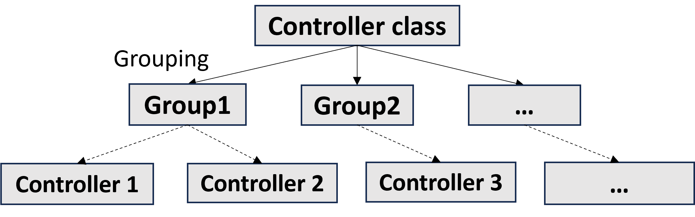
Circular Dependency.
Example: Post #2981750 discussed how to refactor a large messy
codebase. The codebase has problems such as single classes taking
on multiple responsibilities with high coupling. The solution is: 1)
Drawing High-level Architectural Diagrams: depict the high-level
architecture of the program to help identify key points for refactoring; 2) Staged Refactoring: avoid performing massive refactoring
efforts all at once. Instead, focus refactoring on a single module at
a time, ensuring stability before proceeding to the next stage; 3)
Employing Unit Tests: After each small-scale refactoring, run unit
tests to ensure that the code's functionality remains intact.
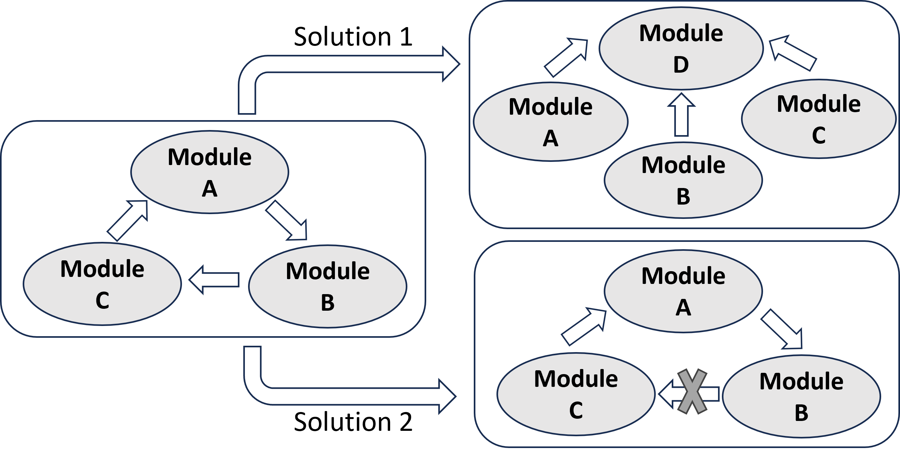
Code Duplication.
Example: In post #717906, there is a large amount of identical or
similar code within the project. The proposed solution is: 1) identify
the functionalities and logic within the project that can be shared;
2) extract the identified shared logics into a common module, and
reuse them within the project to reduce code duplication.
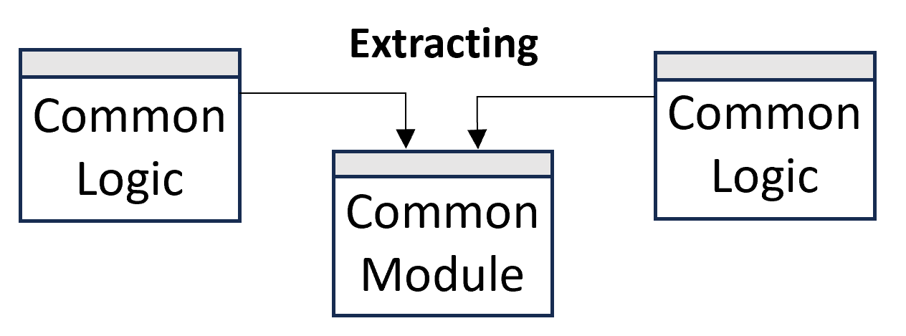
Inappropriate Architecture.
Example: As shown in post #11118030, due to the increase in new
demands, inappropriate architecture causes a lack of scalability of
the application, which needs to be refactored to a microservices
architecture to improve scalability. The solution to this problem: 1)
Architecture Assessment: analyze the current application's architecture to identify which parts are shareable core services; 2) Service
Segmentation: based on service boundaries and responsibilities,
gradually break down the application into a series of independent
microservices; 3) Gradual Functionality Migration: gradually migrate existing functionalities to the new architecture, starting with
low-risk functionalities and progressively moving to core functions.
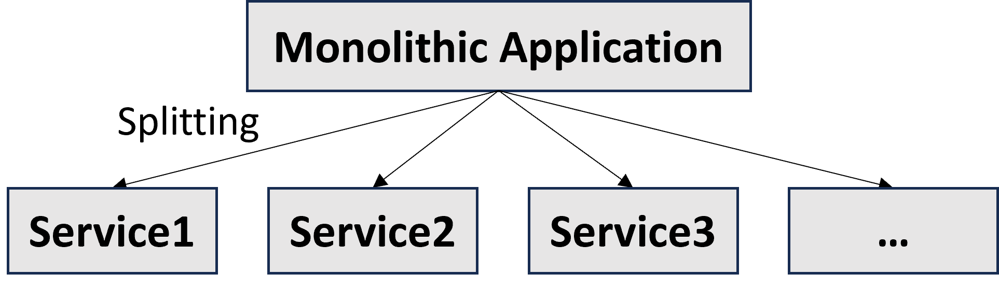
System Complexity.
Example: The post #8599036 says that as the project grows in
size, code becomes difficult to manage and maintain. Without clear
layering or pattern guidance, project code can easily become disorganized. The project's GUI components (views) are tightly coupled with business logic (controllers), making the code difficult to
test and maintain. The solution is: 1) MVC Architecture: separate
model, view, and controller for different responsibilities; 2) Event
Bus Pattern: decouple component communication. In this way, the
modularity and maintainability of the architecture can be improved.
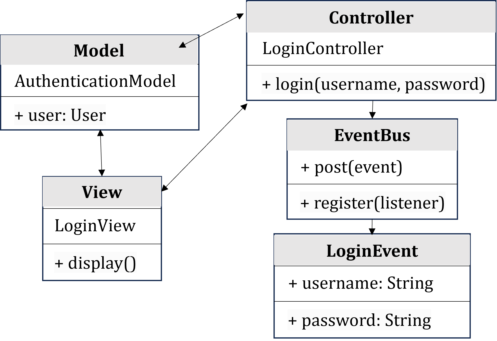
Low Performance.
Example: In post #7610881, the application becomes unresponsive
during heavy computation or large-scale data processing, leading
to low performance. This requires transforming into a multi-thread
application. The solution to this problem: 1) Separating Calculation
Logic: move all intensive calculation tasks to a separate worker
thread for execution. 2) Updating the GUI: ensure the main thread
(UI thread) remains responsive. 3) Preventing Modifications during
Computation: ensure that users cannot change data that might
affect the computation results while background calculations are
ongoing, thereby ensuring the application's thread safety.
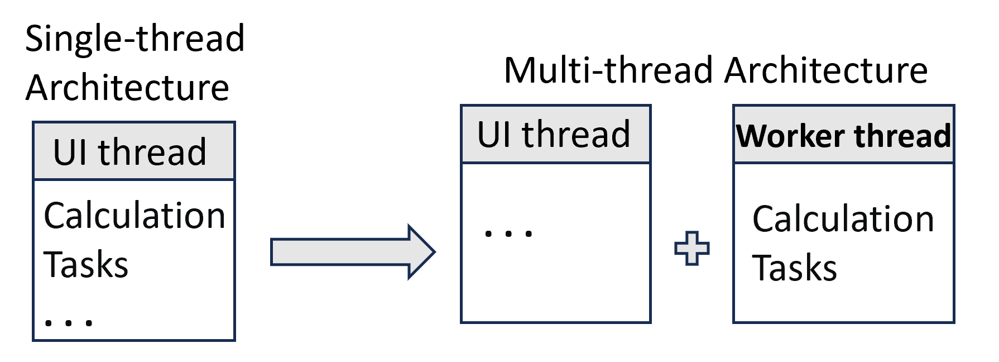
Resource Usage Problem.
Example: In post #60561713, 6 services concurrently interacted
with an SQL Server 2016 database for both read and write operations, which led to 99% CPU usage and memory issues. The solution
is: 1) Data Caching: implement caching for frequently read data
to reduce the direct reads from the database. However, if the data
is frequently modified, caching may not be the optimal solution;
2) Read-Write Splitting: adopt a pattern of a read/write primary
database with read-only replicas to scale out reads but does not
scale writes. But this may require the application to handle replication lag; 3) Sharding: scale out write operations by sharding the
database data. Each shard can independently handle writes, but this
can introduce complexities such as cross-node query aggregation;
4) Separate the database into two parts, one for reads and the other
for writes. This can offer more flexible scalability options and allow
for optimization of different database architectures for reads and
writes.
Database Design Problem.
Example: In post #4880566, the application's user interface responds very slowly when handling a large amount of user activity
data, which requires database refactoring. The solution contains 3
steps: 1) Database Performance Analysis: analyze the performance
of database queries in depth to ensure their efficiency. 2) Optimizing
Table Structure and Indexes: establish primary key indexes based
on widely used filter/retrieve criteria to retrieve the data efficiently.
3) Result Caching: cache the results of queries with high overheads
on the server side.
Data Model Problem.
Example: In post #42981574, the application has two roles: User
and Photographer which differ in the data model but need to share
a common login system. The solution is: 1) Unified User Model:
merge users and photographers into a unified User model, and
distinguish role types through fields (such as a type field); 2) RoleSpecific Submodels: create role-specific submodels like UserProfile
and PhotographerProfile to host data and logic unique to each role.
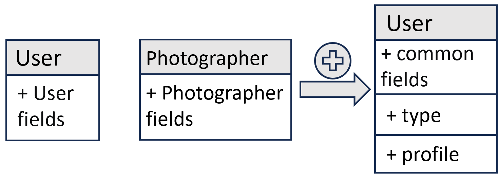
Data Consistency Problem.
Example: Post #24788337 shows that in a distributed analytic
system, the data of worker nodes is inconsistent due to database
updates. The solution to this problem: 1) Assign a unique job ID
when initiating a calculation and pass it to all messages for the
jobs' tasks; 2) Workers attempt to retrieve the required data from
Redis using the job ID; 3) If the data is available in Redis, it is used
directly. If not, workers load the data from the SQL Server database
and store it in Redis associated with the job ID; 4) At the end of
the job, all data in Redis related to the job ID is cleared to keep
consistency for subsequent tasks and jobs.
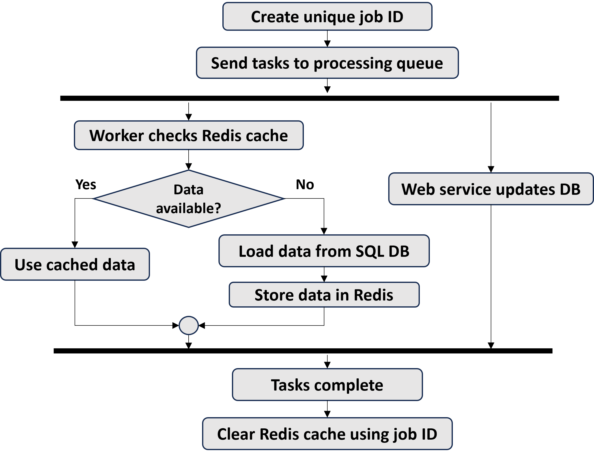
Difficulty in Testing.
Example: Post #45468867 shows the problem of how to efficiently
test the barely testable legacy code base. The solution to this problem: 1) Identify and Create Seams: find relatively independent
blocks of functionality in the legacy code as seams. Introduce tests
at these seams to ensure that changes won't affect the entire system; 2) Write Tests and Refactor Code: apply tests at the seams
and then refactor the code under the protection of these tests. Use
SOLID principles and other best practices for design; 3) Introduce
Dependency Injection and Mock Objects: use dependency injection
to replace external dependencies (like databases, file systems) with
controllable mock objects, making unit testing easier.
Compilation and Deployment Problem.
Example: In post #1073384, the C++ project takes about an hour
and a half for a full rebuild, which greatly reduces development
efficiency. The solution to this problem: 1) Parallel Compilation:
use multi-core CPUs to process compilation tasks in parallel to
reduce the overall build time. 2) Distributed Compilation: distribute
compile tasks across multiple machines to enhance build efficiency.
3) Incremental Build: only recompile the changed code, rather than
recompile the entire project every time.
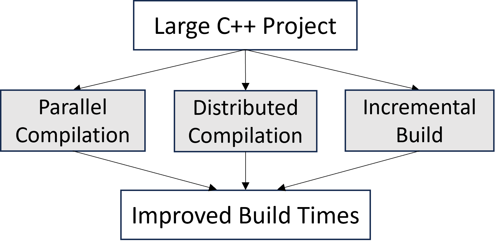
Security Problem.
Example: In post #56606278, directly exposing SQL Server over
the internet can pose significant security risks. The solution to this
problem: 1) Creating a Web API: create a Web API that handles
all interactions with the SQL Server database; 2) Securing the API:
use OAuth, JWT, or other token-based authentication mechanisms
to protect the API. 3) Authorization: implement role-based access
control to ensure users can only access permitted resources. In this
way, the security of the system can be significantly improved.